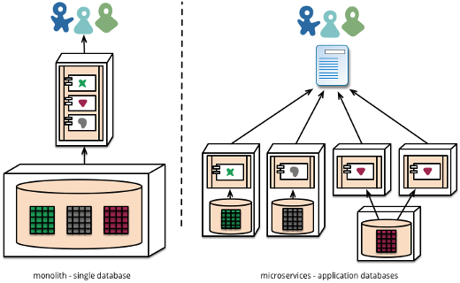
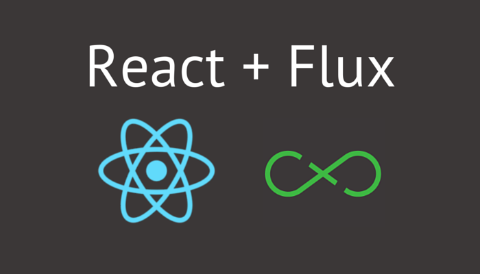
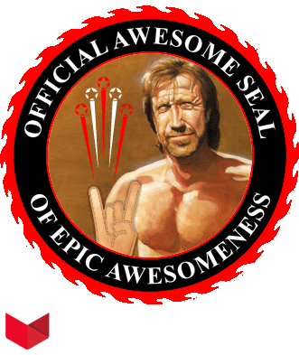

Angular
You better React fast
Presentatie @ PXL
Introductie
We are...
Bert Swinnen
@BertSwin
Mario Van den Eynde
@mariovde
We work for...
“iDA Mediafoundry delivers
well-integrated and highly scalable,
personalized digital web experiences.”
We work(ed) on...
Why we're here...
- Theorie vs. praktijk
- In web, we trust
- Spreading the love
- We love to share
- You do make a difference
A bit of history

|
1991: HTML: text 1994: HTML 2: lists, forms 1996: CSS 1 & JavaScript 1997: HTML 4 1998: CSS 2 2000: XHTML 1 2002: Tableless Web Design 2005: AJAX 2006: Jquery 2006: Sass |
2009: HTML 5 2009: CSS 3 2009: Node.js 2010: BackboneJs 2010: AngularJS 2011: WebGL 2012: Grunt 2012: Bower 2013: ReactJs 2013: Gulp |
|
2004: Gmail 2004: Facebook 2005: YouTube 2006: Twitter ... |
1991
- Tim Berners-Lee introduceerd het World Wide Web
- Geen binaire files en data verzenden
- Een eigen web van informatie om op te halen en te verzenden
- Basis van het huidige internet
1992
- Mosaic was de eerste browser
- Mosaic wordt Netscape
- Afbeeldingen, tekst, links en scrollbars
- Amerikaans Congres keurt wet goed om internet publiek toegangkelijk te maken
- Bedrijven kopen en verkopen zichzelf en goederen via het internet
JS
1995
- Ontwikkeld gedurende 10 dagen in Mei' 95, als Mocha
- Question: Wie ontwikkelde JavaScript?
- Door Brendan Eich
- Question: Hoe heette JS in het begin?
- September '95: LiveScript
- December' 95: JavaScript
1996-1997
- ECMA defineert standards: ECMAScript 1
- Verder: niets speciaals
2000
- Microsoft doet eerste stappen om enkele JS API's deftig te implementeren
- Maar beslist later om z'n eigen JS implementatie te voorzien
2005
- E4X wordt ontwikkeld: ECMAScript for XML.
2007 - 2008
- Adobe vs. Microsoft vs. Mozilla Corp
- Community to the rescue: Ajax sinds 2005
...ever since
- Nu Ajax geintroduceerd werd:
- JQuery
- Prototype
- MooTools
2008
- Alle grote spelers: unhappy
- Samenkomst in Oslo
- ECMAScript 5
Nu
- NodeJs: Javascript serverside
- HTML5 API's
- Video controls
- Geolocation
- Device api's
- Websockets
- Browser storage
We'll use Javascript!

JavaScript is succeeding very well in an environment where Java, Flex, Silverlight and many others were a total failure
Why Javascript?
- Prettify je website en snelle servers/backends
- Immense vraag naar developers (chi-ching!)
- Angular(2)JS
- Node.js
- ReactJs
- Eenvoudig en onmiddelijk resultaat
- Verschillende toepassingen
HTML5
- Geolocatie
- Video/Media controls
- Mobile/Responsive development
- Browser storage
CSS3
- Compilers
- Sass
- Compass
- Mediaquery detection
Libraries
Templating
Mustache.JS

Libraries
MVC
Web experiences
Scalability (Caching)
Responsive design (mobile)
Native feel
Time to market
SEO
Analytics
Digital marketing
Personalization!
Semantic web (web3.0)
Restful
Microservices
Rich client experiences
Experience driven (targeting)
Isomorphic javascript
Search (searchandizing)
RDF, Google rich snippets ..
RESTful
Stateless!
Are you really well RESTed?

Richardson maturity model
Microservices
Focused
Lightweight
Service oriented
Independently deployable
Automatically deployed
Loose coupling/high cohesion
Microservices
Rich client experiences
HTML5
CSS3
Nieuwe technieken
In Javascript we trust
=> toenemende verantwoordelijkheid voor front-end
Impact
Testing!
Quality assurance
Nood aan structuur
Web abstraheren boilerplate code
Efficientie
Compleet (nieuw) ecosysteem
Front-end ecosysteem
Linting (JSLint, CSSLint)
Testing frameworks (jasmine.js, karma, protractor)
Pre- en postprocessors (Sass, Less, auto-prefixer)
Frontend frameworks (Bootstrap, Foundation, grid systems)
Task runners (Grunt, Gulp, Npm?)
Package managers (Bower, Npm)
Plugins galore (via Npm)
Packagers (Browserify, Webpack)
MVC frameworks
Backbone.js
Ember.js
AngularJs
Web components
Shadow DOM
Encapsulation
Google Polymer
Angular2
ReactJS
React
Wat?
- Open-source JS library
- Question: Welk bedrijf ontwikkelde React?
- Facebook & Instagram
- React Native (iOS & Android)
- Gemaakt voor grote datasets te updaten
- Alleen de "View" laag van MVC
Features
- "Properties flow down"
- "Actions flow up"
- Virtual DOM
- DOM in het geheugen
- Verschil wordt daar berekend
- Alleen aangepaste node wordt aangepast.
Features
- Isomorphic
- "werkt in twee richtingen"
- 1 code: zowel op server als op client
- SEO-hassle: fixed!
Web Components
- Functionaliteit en markup samen
- Alleen datgene wat het moet doen
- Eigen tag
waarom?
- Kleine componenten werken
- Simpel en klein
- Werkt perfect met andere libraries: Backbone, Knockout...
- Niets "leren": JSX (eigenlijk gewone javascript)
- ...t.o.v Angular...
Angular vs ReactJS
| React | Angular |
|---|---|
| Databinding en events | Alles |
| Lage leercurve | Hogere leercurve |
| Intelligente DOM manipulatie | Volledige DOM update |
| 1 way data flow | 2 way binding |
| Alleen View | MVC |
Dependency Hell?

React + Flux
- Wat met Model en Controller? 
- Flux, zeg je?

How did we do it?
Code visit
Pipelines n' stuff
Mini demo: Gulp & Sass
Let's get to work!
Build your own?
Conclusies
- Kan React alles wat Angular kan: kind of
- Moet ik React gebruiken: perhaps
Congrats
